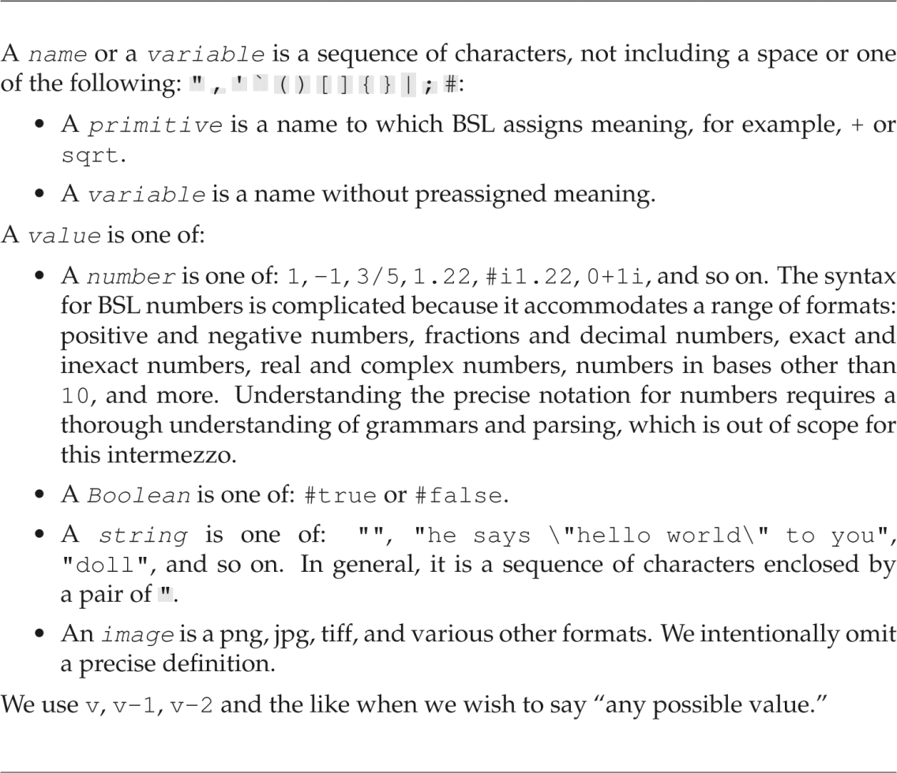

BSL Vocabulary
Figure 39 introduces and defines BSL’s basic vocabulary. It consists of literal constants, such as numbers or Boolean values; names that have meaning according to BSL, for example, cond or +; and names to which programs can give meaning via define or function parameters.

Figure 39: BSL core vocabulary
Each of the explanations defines a set via a suggestive itemization of its elements. Although it is possible to specify these collections in their entirety, we consider this superfluous here and trust your intuition. Just keep in mind that each of these sets may come with some extra elements.